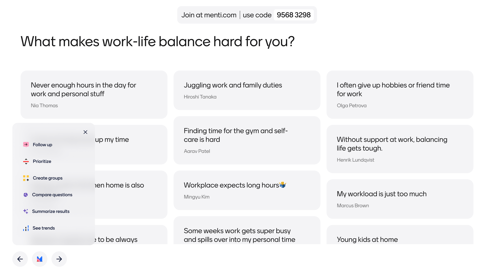
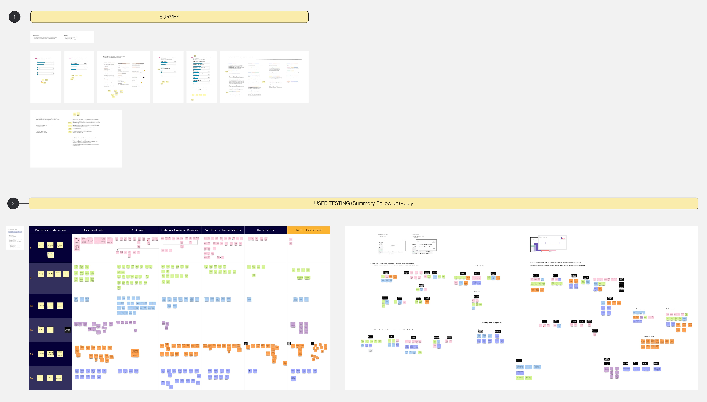
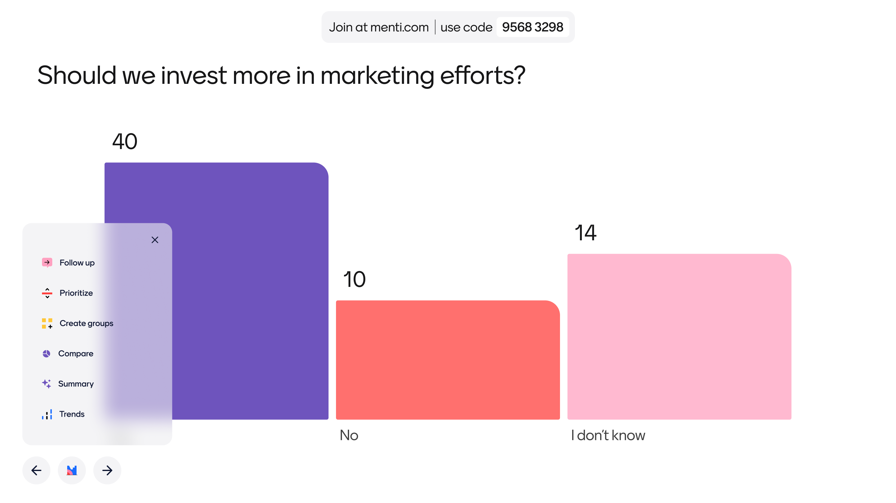
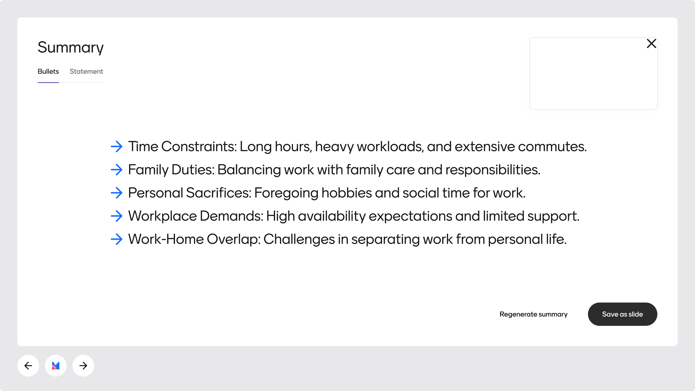
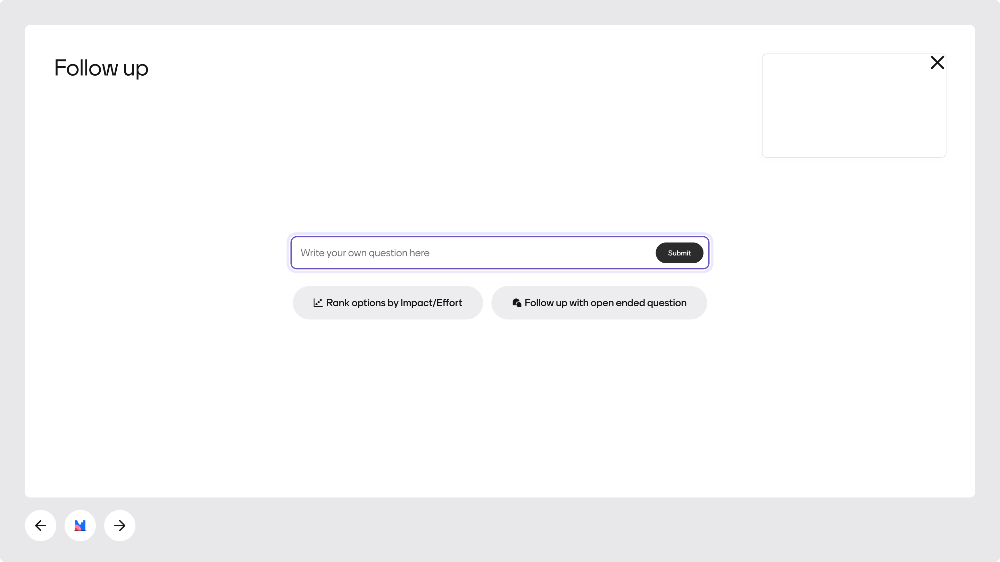

AI-powered insights
Background
Mentimeter is primarily used to create engaging presentations and surveys. Essentially, we help people ask questions, create conversations, and get answers. And, after users share a presentation or survey, we offer several ways for them to dig into their data and build upon their insights.

Challenge
At a company level, Mentimeter's goal is to increase product engagement. We’ve found that once a user passes an activity threshold in the product they tend to stay engaged and active much longer. By offering more features that speak to user needs, we believe more users will be inspired in their day-to-day usage, and we’ll in turn see more long-term engagement from those same users.
Research showed that when a user engages with insights tools, they’re more likely to create another presentation or survey. And, as noted above, once a user creates that second (or third) presentation, they’re more likely to stay on the platform longer. Since Mentimeter’s users primarily create live presentations, we wanted to explore ways to improve the presentation experience with the power of insights-focused tools.
However, even experienced presenters can have trouble adapting on the fly to changes in a presentation. To make things easier for presenters, we also chose to explore ways for AI to help power these new insight tools.
Our approach
To ensure we were building something that actually benefits users, our team did the following:
- Completed competitive & comparative landscape research to assess current best practices around live insight creation
- Partnered with the AI and Engineering teams during design explorations to ensure that all concepts were feasible
- Created lo-fi prototypes in Figma of AI-powered tools
- Held qualitative research sessions with key user types to test the overall concept and gather feedback on the design of the product
- Iterated on design changes with multiple members of the Design and Development teams
- Created a central access point for these features within live presentations
- Launched 3 tools within the platform to start with a small subset of users

Outcomes
We saw a lot of clear success with our approach during the creation of these tools. For example, research sessions helped us establish a clearer naming convention that users could understand. Additionally, we were able to create clear guidelines within Design and Development on the best ways to incorporate AI into the product.
While we’re still tracking engagement and activation rates for this this tool, we’ve already seen some positive reactions that have us optimistic about the overall outcome.
Project samples & additional details

Menu names use verbs and nouns depending on if it triggers a group action or a summative outcome.

For example, the Summary button can quickly summarize thousands of responses into bullets or a short paragraph.

When opened, AI also suggests a few questions based on a user's most recent slide content.